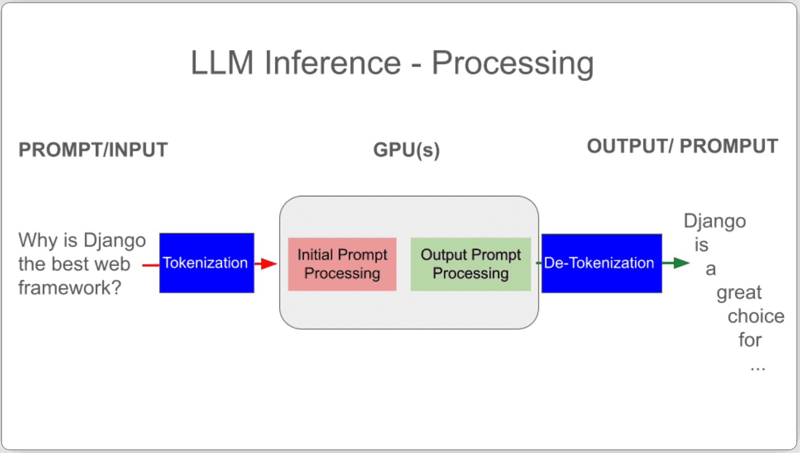

DjangoCon US 2025 Recap¶
Table of Contents¶
Disclaimer: the content of this post is a reflection of my career journey and not specific to my work at JPMorganChase.
Intro¶
DjangoCon US took place in Chicago, Illinois from September 8-12. It was a stellar experience.
Ensuring Django is relevant for the next 20 years and Django and the AI landscape were hot topics, in addition to the latest Django features and community news.
I was also able to spend the day before the conference sightseeing. I couldn’t help but think of the 1986 movie Ferris Bueller’s Day Off, widely considered to be a “love letter to Chicago” by director John Hughes and one of my favorite movies. After a day of adventures across Chicago, Cameron famously tells Ferris that he doesn’t think he has seen anything good.
I am happy to report that I saw everything good!
üîù back to top
Pre-conference Activities¶
The View from Above¶
While making my flight reservation, I googled for advice about the best side of the plane to be on for a great view when arriving in Chicago. As we approached, I feared that I had chosen the wrong side, but I hadn’t! The downtown appeared to my left, then the pilot circled around above Lake Michigan, and I got another view from the other side.
 Downtown Chicago
Downtown Chicago
üîù back to top
The Field Museum¶
Thanks to my employer’s generous financial support of Chicago area museums, I was able to enjoy some sightseeing perks, starting with the incredible Field Museum. The museum owns over 30 million items that serve as a comprehensive record of life on Earth. Among these are unique and rare fossils, plants, insects, taxidermy animals, gems, meteorites, and cultural objects.
Unearthed in Argentina, Máximo Titanosaur (Patagotitan Mayorum), the largest animal to have ever walked the earth that we know of, lived 101.6 million years ago. He or she was estimated to have weighed 70 tons, spanned 122 feet long, and is 28 feet tall at the head. Say cheese!
 The infamous Tsavo Lions are two of the most high profile items in the collection. In 1898, they went on a man-eating spree, terrorizing railway construction workers in Kenya for nine months, until they were shot dead. They were the subject of the 1996 movie The Ghost and the Darkness, starring Val Kilmer.
The infamous Tsavo Lions are two of the most high profile items in the collection. In 1898, they went on a man-eating spree, terrorizing railway construction workers in Kenya for nine months, until they were shot dead. They were the subject of the 1996 movie The Ghost and the Darkness, starring Val Kilmer.
 Megalodon, the largest shark to ever live, preyed on whales and went extinct when oceans worldwide got colder. This jaw and teeth (replica cast) was dated 23-3.6 million years ago.
Megalodon, the largest shark to ever live, preyed on whales and went extinct when oceans worldwide got colder. This jaw and teeth (replica cast) was dated 23-3.6 million years ago.
 Among the museum’s holdings is one of the most impressive ancient Egypt collections in the world, including a three story replica of an ancient Egyptian tomb that contains two authentic burial chambers that date to 2400 B.C., 23 human and 30 animal mummies, artifacts from everyday life and mummification rituals.
Among the museum’s holdings is one of the most impressive ancient Egypt collections in the world, including a three story replica of an ancient Egyptian tomb that contains two authentic burial chambers that date to 2400 B.C., 23 human and 30 animal mummies, artifacts from everyday life and mummification rituals.
üîù back to top
Shaw’s Crab House Lunch Special¶
While researching Chicago, I came across many recommendations for Shaw’s Crab House, a beloved, 40-year-old Chicago institution. I took a break from sightseeing to enjoy their reasonably-priced gourmet 3-course lunch special. The food was delicious, and the ambience left me feeling like I was a character in a movie.
 Shrimp cocktail
Shrimp cocktail
 Pan-seared Alaskan cod
Pan-seared Alaskan cod
 Mini chocolate cake
Mini chocolate cake
üîù back to top
The Art Institute of Chicago¶
After lunch, I spent the afternoon at the Art Institute of Chicago. The Art Institute is one of the world’s great art museums, renowned for its collection of Impressionist and Post-Impressionist art.
Having looked through the museum’s collection ahead of time and noted my favorites, I saw many great works. For fun, I also took the Be Like Ferris Tour, featuring art works seen in Ferris Bueller’s Day Off when Ferris, Cameron, and Sloane visit the museum.
 The front of The Art Institute of Chicago
The front of The Art Institute of Chicago
 America Windows by Marc Chagall
America Windows by Marc Chagall
 Nighthawks by Edward Hopper
Nighthawks by Edward Hopper
 A Sunday on La Grande Jatte by Georges Seurat
A Sunday on La Grande Jatte by Georges Seurat
 Gallery 211, one of my favorite rooms
Gallery 211, one of my favorite rooms
The Thorne Miniature Rooms in the basement are also a must see.
üîù back to top
My Incredible Room¶
After sightseeing, I checked into my hotel.
I was fortunate to stay at the 4-star Thompson Chicago by Hyatt, perfectly situated in the fun Gold Coast Neighborhood along the Magnificent Mile, filled with historic architecture, luxury shops, and in close proximity to the Oak Street Beach.
 I could get used to this…
I could get used to this…
 Stunning city view
Stunning city view
üîù back to top
Pre-conference Social¶
On Sunday night, I decided to go to an informal pre-conference social at Tiny Tapp organized by Jon Gould of Foxley Talent. I made some new friends and was rewarded with this nighttime view of the buildings overlooking the Chicago River and Riverwalk.
 What a view!
What a view!
üîù back to top
Monday¶
Monday Pre-conference¶
I couldn’t resist getting breakfast at the Original Pancake House, conspicuously located directly across from my hotel. The strawberry crepes were divine, and the coffee was perfectly strong.
Ready for an adventure
 Taking the Red Line south
Taking the Red Line south
 Enjoying the view along the Chicago River on the way to the nearby venue
Enjoying the view along the Chicago River on the way to the nearby venue
üîù back to top
Orientation¶
The conference kicked off with the orientation that only Kojo Idressa can give, including an important reminder to take care of yourself through a #selfcaresprint.
Monday Opening Remarks¶
Conference Chair Keanya Phelps is a native Chicagoan who loves house music. She is a project manager at Caktus Group and a Djangonaut Captain.
She put her heart into making the conference relevant and approachable for everyone and gave it a unique Chicago flavor. Ahead of the conference, I enjoyed her Chicago Like a Local blog posts for tips.
Learn more about her in her DjangoCon US interview blog post.
She gave an inspiring welcome.
“DjangoCon is more than just code, its about creating a space where everyone feels welcome and valued.”
I am looking forward to the post-conference series of blog posts she will be publishing.
Thank you to Caktus for supporting her in her conference chair work.
As always, hey, we don’t do that here.
üîù back to top
Keynote: Lateral Thinking with Weathered Technology: How the Nintendo Philosophy Applies to Modern Web Development¶
Carson Gross is the creator of the htmx library and the founder of the HyperMedia Research Group at Montana State University.
htmx enables developers to use custom HTML attributes that trigger AJAX requests and update fragments of a page without a full reload, without using JavaScript. As a hypermedia-driven approach, the server can return HTML fragments.
Carson told the story of Gunpei Yokoi, the original Game Boy designer. He was on a train in Japan and saw a bored businessman playing with an LCD calculator. It inspired him to create a simple, handheld game with a two-bit screen (four total colors).
Despite its mixed reviews and the sophistication of its competitor Sega with its full-color screen, Game Boy won massively.
Why? Because technology is not its own end. It is in service to something else. You don’t have to use the latest technology to have fun.
Lateral thinking with weathered technology is about taking an existing technology and adapting it to a new use. This philosophy can be applied to web development.
The industry prioritizes new things and pressures us to adopt them. The industry has left behind good ideas, such as hypermedia.
HTML 2.0 transformed the web into a read-write hypermedia system, unlocking tremendous value. When Django was released in 2005, it was a hypermedia framework for producing HTML. In the 2010s a massive transformation happened- from hypermedia to JSON APIs feeding large JavaScript frontends.
Hypermedia became the equivalent of the two-bit game boy.
htmx provides a surprisingly modern web experiences using a hypermedia interface at a fraction of the complexity.
Doing everything in JavaScript would rob Django of its Django-ness. Django’s hypermedia-oriented features can become useful again
Tips from Carson
During Q&A, Jeff Triplett asked what can Django to do better support htmx/frameworks that embrace htmx (as of Django 6.0, template partials are baked-in) and Natalia Bidart pointed out the challenge with testing.
As promised, Carson cut htmx release 2.0.7 the same day. Adam Johnson bundled it into his django-htmx 1.24.1 release.
Django community loves htmx. Adam Johnson and Carlton Gibson, former Django Fellow, are two high profile advocates.
Useful-to-me notes:
Carson’s books: The Grugbrained Developer and Hypermedia Systems
intercoolor.js (predecessor to htmx)
üîù back to top
Community Update: Django Events Foundation North America¶
DEFNA President Peter Grandstaff gave the update.
What drives DEFNA Board Members? The people.
People get involved, grow, expand, make the world better by helping others. Consider how you are reinvesting in the community. It’s up to us.
DjangoCon US 2026 needs:
Organizers- anyone can help (email hello@defna.org)
Sponsors- helps lower ticket prices, which have recently increased
DEFNA has put out a Call for Venue Proposals for DjangoCon US 2027-28. The deadline is January 15, 2026. If you have questions, feel free to talk to Peter Grandstaff or Keanya Phelps, both of whom have had their proposal accepted.
Sprints are a way to contribute back to Django through code, docs, community. Lilian of Djangonaut Space talked about how to get started.
Tips from Lilian
Useful-to-me notes:
Check out Sara Boyce’s Vulture Method.
üîù back to top
Django for AI: Deploying Machine Learning Models with Django¶
Will Vincent works as a developer advocate at JetBrains and is a popular author, Django Chat podcaster, and Django News newsletter curator.
His talk was about the shift happening due to AI. Django can and should be a part of it.
According to the latest Django Developers survey, 70% of respondents use ChatGPT, a third use Copilot, Claude, JetBrains AI Assistant, and others.
According to the most recent Python Developers Survey, FastAPI is used more than Django or Flask.
Will says that at the Python conferences he has been to this year, attendees were discussing AI and FastAPI, not Django.
Rather than burying our heads in the same, we need to learn from what is happening.
Criticisms Will hears about Django… it is perceived as:
slow (FastAPI has “fast” in the name and is async by default)
old (rather than boring and stable as some believe)
big/hard to learn (akin to the Flask microframework versus batteries-included debate)
Will split his talk into two sections:
Classic Machine Learning prototype- how to train a model from scratch and deploy to Django
LLMs- the key difference between serving a classic machine learning model versus an LLM, followed by a protype
Jupyter code… the start of the classic machine learning model in a Jupyter notebook.
Notably, Will’s classic machine learning model consists of about 20 lines of code (including imports), with a mere 2 lines doing the training. A Jupyter cell can be added to enter inputs and see results for the model. The model is eventually saved as a joblib file, “a serialized Python object for saving and loading trained ML models.”
Django is the web interface we can use to bring the model to the world.
Django gameplan
The iris.joblib file is added to the base directory.
A function-based view accepts forms values from the user and makes predictions using the model.
Optional:
A models directory for multiple models
A model to store predictions- the data can used to retrain the model
A Django admin to see user responses and predictions in real time and interact with the data
The code is in the repo django_irisml. You can try it out at DjangoforDataScience.com.
Will’s books Django for Beginners and Django for Professionals explain many of the steps needed to create and deploy Django apps.
Will’s key point is that the model created in this not so big as to be computationally hard to serve. Django is great for small and medium ML models.
Will moved on to LLMs.
They are token prediction machines.
Will explained the AI hierarchy of Machine Learning, Neural Networks, and Deep Learning. LLMs are a form of Deep Learning.
These concepts have been around since the 1940s, but there were technical challenges around scaling them.
Original architectures were sequential, one token at a time. Google’s famous 2017 paper “All You Need is Attention” demonstrated that you could look at all the tokens at once.
OpenAI’s 2020 paper Scaling Laws for Neural Language Models Paper showed the bigger your LLM model, dataset, and compute, the better the result.
These two concepts together were revolutionary.
The two stages to building an LLM model:
Training: vacuum up the entire internet
Inference: inputs are fed into an LLM model, computed, output streamed. Text works best.
Key training tasks
Data prep: data has to be cleaned, deduplicated, offensive content removed
Getting data: some sources are weighted more highly than others.
Tokenization: transforming words (or subwords) into numerical IDs. Will says there are approximately one quadrillion tokens.
Will gave a detailed explanation of how LLM inference works.
 LLM inference processing
Will’s point “… the web itself has never been more important. These fancy models are useless without a way to connect them to paying users. How do they do that? With the web. But there’s a catch. Serving these models via inference is radically different than the database-driven paradigm we’re all used to with Django.”
Traditional web request versus inference
Why Django is a poor choice to serve LLM models:
Frontier-level models are terabytes size
We cannot optimize inference like a traditional web request served up by a database. We can only buy more GPU. Every input causes a GPU cluster to run, which is expensive.
FastAPI is built into many AI tools. Uses Starlette ASGI framework, Pydantic, can stream token asynchronously.
Will said, Django can do more than you think.
In line with Carson’s talk, Will used “the boring old web” to create a Django LLM chatbot prototype:
Server-sent events: send one HTTP request, receive a streaming response (StreamingHttpResponse- added in Django 1.5 in 2013)
HTML Streaming
Two templates and htmx- no JavaScript
Python generator sends one token at a time
Regular synchronous views
Results stored in database and accessed via admin
The code
Thank you to Will for a particularly relevant deep dive. It was my favorite talk of the conference. Inspired by Simon Willison, Will did a detailed write-up of this talk.
Useful-to-me notes:
üîù back to top
Django’s GeneratedField by Example¶
Paolo Melchiorre walked through the process of how GeneratedField feature became a reality in Django 5.0.
This was not his first time contributing to Django. In 2017, he added RandomUUID for Postgres.
The idea of a GeneratedField had existed for a while. A now-stale ticket had been made in 2020.
In 2022, Paolo made a small code PoC and proposed the idea in the Django Developers Forum. A lot of debate ensued. The feature was eventually implemented through PRs #16417 and #16860.
Paolo pointed to the Django performance and optimization docs which say that it’s almost always faster to work at a lower level (closer to the database).
The GeneratedField can perform an operation on database fields at a database-level. It is supported by all db backends.
Unfortunately, there was only one example in the docs. Paolo gave a plethora of examples including geometric, DateRange, JSONObject, full-text search, and GIS calculations.
Total price calculation and output example
Check out more examples in his slides.
Useful-to-me notes:
üîù back to top
Monday Bonus¶
 Chicagoan David Beazley is a well-known author and teacher in the Python community who offers advanced programming courses. I first met Dave at PyGotham 2019 after his keynote and was excited to reconnect. I scored a signed copy of his book Python Distilled!
Chicagoan David Beazley is a well-known author and teacher in the Python community who offers advanced programming courses. I first met Dave at PyGotham 2019 after his keynote and was excited to reconnect. I scored a signed copy of his book Python Distilled!
Me and my sweet friends Afi and Velda. They surprised me with gifts to show their appreciation for me. I felt so special! Afi did a great job managing program and giving opening remarks and Velda serving on the DEFNA Board and moderating the Two Decades of Django panel. (photo credit: Dawn Wages)
Gifts from Afi and Velda: beautiful flowers, Harrods spiced salted caramel shortbread, a British keychain, a postcard with handwritten messages
üîù back to top
Lincoln Loop Social Event¶
After the conference, I headed over to the Broken Shaker Bar for a Lincoln Loop Social.
 The bar area before the room soon reached full-capacity.
The bar area before the room soon reached full-capacity.
üîù back to top
Tuesday¶
Tuesday Opening Remarks¶
Peter Grandstaff gave the opening remarks.
Questions:
Who has had fun in Chicago?
Who has learned something?
How many have been helped by someone we met at DjangoCon US?
Perhaps referencing Carson’s talk, Peter identified Django as a weathered, seasoned tool that has withstood the test of time over 20 years. We are its guardian.
Peter asked us to connect deeply and openly.
It’s not just about us, but about bringing lessons and successes, and growing good in a sometimes troubled world.
Let’s sustain Django and make the world a better place.
üîù back to top
Keynote: All the Ways to Use Django¶
Zags (Benjamin Zagorsky) is the co-founder and CTO of Zagaran, Inc. a software consultancy. He has used Django extensively and has seen a lot of use cases, including unexpected ones.
He gave a wealth of info from his experiences.
Some scenarios covered in his talk:
Django and frontend frameworks
Django and multi-service architectures
Django and other databases- Django’s ORM is pluggable
Django and worker environments
Inheriting an ecosystem- the Stranger Fig Pattern, transitioning a Python service to Django, using Django patterns outside of Django
Django’s greatest strength: boilerplate reduction. Django provides the generic code. You can write the code specific to your app.
Django’s most powerful feature: the ORM
Zags warned that looking at StackOverflow tags data, Django appears to be losing popularity to Next.js. This could be because Django is well-documented and stable.
Zags said, maybe Django needs a JavaScript Strategy. To make it another 20 years, we need to accept that JavaScript is part of the web.
 Easy ideas: Django 1.7 absorbed South and it bacame Django migrations. Could the same happen with Django Rest Framework?
Easy ideas: Django 1.7 absorbed South and it bacame Django migrations. Could the same happen with Django Rest Framework?
 Medium hard ideas
Medium hard ideas
Three more ideas: Next.js has an entire hosting menu even though they sell hosting and is a recommended framework for partnership with React
Final thoughts: help Django get there, but don’t wait for Django to get there.
Check out his slides for more.
üîù back to top
Community Update: Python Software Foundation¶
Outgoing PSF Chair Dawn Wages gave the update.
Three priorities:
The deadline to vote in the 2025 Board Election was approaching. If you want to vote next year, become a member: spend 5 hours/month on average investing in the community or pay (sliding scale is available)
The PSF Grants program was temporarily paused after hitting the funding cap, which was a shock to the community
The PSF will have a fundraiser soon
Priorities 2 and 3
What qualifies for the 5 hours? Among other things:
Running a local meetup
Contributing to open source
Taking part in Djangonaut Space, Wagtail
Being a DjangoCon US organizer
Becoming a member of a PSF Working Group or DSF Working Group (see Dawn’s blog post, too)
Outside of voting, why care? Take a look at the PSF Annual Impact Report.
The Executive Director Deb Nicholson is the CEO of the PSF. The PSF Chair is the highest person who represents the community. Healthy friction is normal. The chair values consensus, finding a path forward.
What lessons can the PSF take away from the DSF and vice versa?
Django is good at DEI, consistent community support, healthy conversations with the community about feature additions.
Professionalism is a goal for the DSF, but difficult to reach. Python has been able to professionalize the organization, hire more people, take some burden off volunteers, but that also puts up a wall for volunteers to understand what is going on.
How much can we afford and what are the responsibilities? OS leaders can help shepherd the DSF into the next chapters.
PyCon US is the main source of funding for the PSF, but we are trying to move away from that. DEFNA manages DjangoCon US.
How to get involved at a local level? Find a PuG (Python User Group) on meetup.com. Show up, ask questions, volunteer to pick up the pizza, get to know what the org does.
üîù back to top

Tuesday Bonus¶
 Jeff, Marlene, me, Paolo. Marlene did a fascinating closing keynote Django Reimagined for The Age of AI.
Jeff, Marlene, me, Paolo. Marlene did a fascinating closing keynote Django Reimagined for The Age of AI.
 Django turned 20 this year. To commemorate the occasion, conference attendees were treated to delicious raspberry cake!
Django turned 20 this year. To commemorate the occasion, conference attendees were treated to delicious raspberry cake!
In case you missed it, I recently wrote down my thoughts in a Happy 20th Birthday Django post.
üîù back to top
Speaker and Organizer Dinner¶
The speaker and organizer dinner was at the jaw-dropping Carnivale restaurant.
 Carnivale bar
Carnivale bar
 Carnivale dining room
Carnivale dining room
 Chipotle lime salad, pollo en pipian, carnitas, vegan paella, arroz verde, guacamole
Chipotle lime salad, pollo en pipian, carnitas, vegan paella, arroz verde, guacamole
A highlight of the evening was sharing stories at our table of our close encounters with tech royalty!
üîù back to top
Amorino¶
After dinner, a group of us walked to nearby Amorino for delicious gelato.
 Ice cream flash mob (photo credit: Mariatta)
Ice cream flash mob (photo credit: Mariatta)
This was my first time trying gelato, and I loved it. I had half Vanilla (bourbon from Madagascar), half Amorino chocolate.
I also crossed an item off my bucket list: taking an ice cream selfie with Mariatta.
 Mariatta and me! Mariatta’s gelato was flower-shaped. (photo credit: Mariatta)
Mariatta and me! Mariatta’s gelato was flower-shaped. (photo credit: Mariatta)
Mariatta was the first woman CPython Core Developer. She was featured in the new Python documentary. Her impact is appreciated, and her voice clearly resonates with the community.
 130 likes, 16 reposts on LinkedIn alone as of the writing of this
130 likes, 16 reposts on LinkedIn alone as of the writing of this
Mariatta also gave a talk at the conference Reverse engineering the QR code generator and URL forwarder service.
Ice cream flash mob video (video credit: Mariatta)
üîù back to top
Six Feet Up Social Event¶
Some of us further ventured to the nearby Six Feet Up Arcade Night at Punch Bowl Social.
 Those in the know said this was a notably large foosball table. Continuing the trend of firsts, I played foosball for the first time!
Those in the know said this was a notably large foosball table. Continuing the trend of firsts, I played foosball for the first time!
üîù back to top
Wednesday¶
Wednesday Pre-conference¶
I knew Wednesday morning would likely be my last chance to make the short walk from my hotel to Oak Street Beach. I couldn’t resist getting up early to do so. It was surprisingly beach-like, despite bordering Lake Michigan. I enjoyed a quiet walk down the coast and watched nearby beach-goers play volleyball and cold-plunge.
 Mild waves rolling in
Mild waves rolling in
üîù back to top
Wednesday Opening Remarks¶
In addition to housekeeping, Afi reminded us to seize the day and make new friends.
 Afi
Afi
üîù back to top
Keynote: Django Reimagined for The Age of AI¶
Marlene Mhangami led the first PyCon Africa and is a former PSF Chair. She is an explorer and maker, and one of my favorite follows on social media.
Marlene pointed out that ChatGPT was the fastest growing app in history and the 5th most visited website in the world. AI is not just for CEOs are futurists. Real people are using it in their everyday lives. We should pay attention.
What does the future of Django look like in the age of AI?
Despite the Django design philosophy (based on The Zen of Python/PEP 20) that Django should not do too much magic, LLMs feel like magic.
To better understand what an LLLM is, Marlene demonstrated an LLM token probability visualizer that she had made (code).
Context matters.
Can we trust LLMs? Marlene gave the example of Grok telling people about “White Genocide.”
She said AI presents serous ethical issues, and we need to hold frontier labs accountable and expect transparency for what LLMs say to the public and environmental issues.
Just because something is flawed, it does not mean it isn’t useful.
As a Django dev, how can I control the context I send?
RAG
MCP
AGENTS.md
RAG involves feeding info from docs or a database into an LLM through the messages param in order control how the LLM responds.
MCP is an open protocol that standardizes how apps provide context to LLMs. A Django app can be an MCP host.
Marlene created an example Welcome to Django Chat MCP app.
While vibe coding in VSCode, you can use an AGENTS.md file to specify best practices to follow.
AI generated code falls short in security, scalability, and maintainability.
How do we prevent leaving people behind?
Marlene told about the non-profit ZimboPy that she started with Ron Maravanyika to teach girls in Zimbabwe to code. Marlene was moved by the support received from the Django community, even though she was not a member. This is something unique about the Django community.
They utilized the popular and effective Django Girls tutorial that helps women “fall in love” with programming.
Although the initiative started in affluent areas, they went to rural areas, too. The conditions were tough. There was no internet in community centers and electricity only some of the time.
She has been exploring the use of a small language model bot offline to walk learners through the Django Girls tutorial in places like this and has made progress.
She says people still need to learn programming from scratch, but can be inspired by vibe coding. Be modular. Do a section at a time, read through the code yourself. Test the code.
Action items for making Django more friendly to work with LLMs:
Central resources
Tell a Django AI story
Be open to AI as a community and framework
Make it clear and straightforward to integrate an LLM with a Django app to create a chat app (think FastAPI)
Chat is the primary interface and Marlene believes it will continue to be.
Resources from Marlene’s talk can be found in her GitHub repo.
Useful-to-me notes:
Simon Willison’s Blog
Andrej Kaparthy’s Build an LLM from Scratch videos
Chip Huyen’s AI Engineering book
GitHub MCP Server- can be used to automate GitHub PRs
Cory Zue’s Vibe Coding with Django video
üîù back to top
Community Update: Django Software Foundation¶
DSF President Thibaud Colas, DSF Treasurer Jacob Kaplan-Moss, DSF Board Member Paolo Melchiorre, and Django 6.x Steering Council Member Frank Wiles gave the update.
News
New Django Fellow Jacob Walls
New DSF Working Groups: social media, events
Proposed DSF Working Groups: DEI, AI
DSF Board elections are coming up later this fall
Django 6.0 freeze and sprints- what will land:
django-csp into core
Template partials (important to htmx fans)
Async tasks framework
Based on an idea Paolo documented in his blog post My Django active developers Sprints proposal, Carlton Gibson and Paolo have begun to organize a twice a year Django development sprint called Django on the Med in Palafrugell, Spain and Pescara, Italy. The first one will taken place October 7-9, 2025, in Palafrugell Spain. If all goes well, they hope to organize them around the world. See the Django on the Med website for info about their serious goals and how to attend.
On the subject of convincing your employer to let you attend, Paolo suggested sharing Łukasz Langa’s recent blog post Sprints are the best part of a conference. “You’re getting for free what you wouldn’t be able to buy if you tried.”
Django on the Med
Jacob Kaplan-Moss gave a budget update, referencing his DjangoCon US 2024 talk. Typically, the DSF has an $18,000 surplus. This year will be a loss. The DSF has decided to make some bets. For example, the fellow role has become increasingly unsustainable. The DSF will need the help of the community to make these bets permanent. Consider supporting the DSF.
If you have helped the Django community in some way, you may be eligible to become a DSF Individual Member. You can be nominated or self-nominate.
üîù back to top
What a Decade!¶
Tim Allen told the audience, you are my people, people trying to be a better version of themselves everyday and make the world a better place.
Tim is a Principal Engineer at Wharton Research Data Services who loves ice cream.
Once upon a time, Wharton was a Coldfusion and Microsoft SQL Server Shop. In 2013, technical debt was mounting. Wharton needed to find something new.
Wharton created the Development Technology Assessment Process (DevTAP), a series of 200 questions to score that would be used to identify a new technology. The process was designed to be iterative so that decisions could be revisited and re-assessed.
Wharton chose Python/Django as the new framework, but the only community question had been: How active is the tool on Stack Overflow?
They got lucky that the community was morally and ethically aligned with them.
This community walks the walk when it comes to DEI.
Tim was blown away that Russell Keith-Magee opened up to the community about his personal battles with depression. If someone as accomplished as Russell could be vulnerable, so can we. We all have a deep-rooted fear that we won’t be accepted.
Tim shared his personal journey with alcoholism.
Tim had brought Han Dynasty food to PyCon 2015 in Montreal as a bribe to host DjangoCon US in Philly (fun fact: the day before PyGotham 2018, I randomly saw Tim in mid-town Manhattan and joined his group for dinner at Han Dynasty).
Tim’s alcoholism was progressing. He had intended to go a full month without drinking, but never had.
Frank Wiles bought him his last drink ever.
Jacob Kaplan-Moss gave a keynote in which he quoted Lynn Root that we’d know when diversity efforts have been successful when we see a whole bunch of average women programmers. The talk has become a part of an amazing confluence of events that changed Tim’s life forever.
He had no idea it was his first day sober. Returning home, he found his family there to stage an intervention. He accepted the help that was being offered.
He had to be open that he was being intentional to no longer drink. Tim was assured that recovery is part of DjangoCon US diversity initiatives and welcome. Steps were taken to de-emphasize alcohol, and local recovery groups were added to the conference website.
Tim was going to focus on tech in his talk, but that changed on Friday when he found out his co-worker Lindsay Rees has passed away.
He does not believe he would be alive if not for the support he has gotten.
The community is willing to have difficult conversations and help. “You matter. You are valued.”
üîù back to top
Wednesday Bonus¶
 Continuing a tradition, Jon of Foxley Talent and I took a photo together!
Continuing a tradition, Jon of Foxley Talent and I took a photo together!
Led by Ngazetungue Muheue, Tim Schilling, and others, Black Python Devs was able to match last year’s DjangoCon US fundraising by accepting donations for a giveaway of DjangoCon Africa art made in Tanzania. The funds are used to help organize and support community events in the Black Python Devs communities.
Black Python Devs Founder Jay Miller celebrated this as a important milestone in organizational continuity as leaders step down. Jay addressed subjects including exhaustion and a desire for change last year in his blog post How Long Should We Be in Charge.
If you want to make a donation to Black Python Devs, you can at their support page.
üîù back to top
Conference Conclusion¶
Thank you to everyone who made the conference unforgettable.
DjangoCon US 2026 will take place in Chicago from September 14-18. I am super-excited to go back!
Continue scrolling for more post-conference fun and sightseeing.
üîù back to top
Post-Conference¶
Wendella Chicago Architecture Boat Tour¶
I’d heard many great things about Chicago architecture boat cruises and considered taking one on Sunday, but decided it would be one thing too many. When I heard that a group of attendees would be taking one Wednesday evening, I had to join. It surpassed my expectations, and I’d love to go again sometime.
 Our Wendella boat (photo credit: Tobias McNulty)
Our Wendella boat (photo credit: Tobias McNulty)
 Our guide, Jai. When we started out, it was daylight, by the end, it was night. Best of both worlds.
Our guide, Jai. When we started out, it was daylight, by the end, it was night. Best of both worlds.
üîù back to top
Giordano’s¶
After the boat trip, several of us stopped to eat at Navy Pier Giordano’s.
Earlier in the week, I’d had a Lou Malnati’s deep-dish, Chicago Classic with sausage, mozzarella, and tomato sauce on a Buttercrust™. The pizza was tasty, but it was surprisingly watery, and the crust was difficult to cut. Giordano’s pizza sauce was a bit too sweet for me. I am Goldilocks. Maybe next visit, I will find my perfect deep-dish pizza.
I had delicious fettuccini Alfredo instead.
 Hopping on a Wednesday night!
Hopping on a Wednesday night!
 My fettuccini Alfredo really hit the spot!
My fettuccini Alfredo really hit the spot!
 Deep-dish, spinach pizza
Deep-dish, spinach pizza
 Me, Jacob, Tim, Mariatta
Me, Jacob, Tim, Mariatta
üîù back to top
More Sight Seeing!¶
More of The View From Above¶
 A view of Downtown Chicago from the south
A view of Downtown Chicago from the south
üîù back to top
More from The Field Museum¶
A 97.5 carat Imperial Topaz Pendant, the largest owned by any museum in the world
 An Esquel Meteorite containing chrysolites that originated from Argentina
An Esquel Meteorite containing chrysolites that originated from Argentina
 An exhibit about a nearly four pound meteorite that fell through a garage in Bendl, Illinois at 9 a.m. September 29, 1938.
An exhibit about a nearly four pound meteorite that fell through a garage in Bendl, Illinois at 9 a.m. September 29, 1938.
An Archaeopteryx, the earliest known dinosaur that qualifies as a bird. All birds are dinosaurs. Birds are the only group of dinosaurs that survived the mass extinction 66 million years ago.
A replica of a Coelacanth. Once thought to be extinct, the first one was caught off the coast of Africa in 1938. They have been swimming unchanged for over 400 million years, even before dinosaurs.
 Chinese masks from late 19th–early 20th century AD
Chinese masks from late 19th–early 20th century AD
 An Alaskan brown bear diorama, one of many dioramas in the museum showing animals in their native habits. Although I have mixed feelings about taxidermy, there are some truly stunning scenes in there.
An Alaskan brown bear diorama, one of many dioramas in the museum showing animals in their native habits. Although I have mixed feelings about taxidermy, there are some truly stunning scenes in there.
Part of the ticketed exhibit After the Age of Dinosaurs, when the asteroid that caused the mass extinction of dinosaurs 66 million years ago hit the earth, this fish died 2,000 miles away when a violent earthquake caused it to be buried in sediment.
üîù back to top
More from The Art Institute of Chicago¶
 American Gothic by Grant Wood
American Gothic by Grant Wood
 Self-portrait by Vincent van Gogh
Self-portrait by Vincent van Gogh
A Sunday on La Grande Jatte by Georges Seurat
 The Old Guitarist by Pablo Picasso
The Old Guitarist by Pablo Picasso
Improvisation No. 30 (Cannons) by Vasily Kandinsky
 Mr. Pointy by Takashi Murakami
Mr. Pointy by Takashi Murakami
üîù back to top